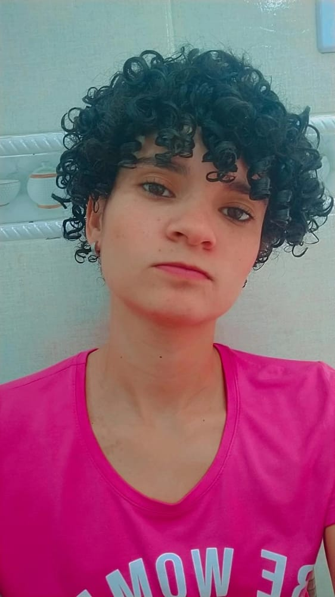

Aqui você saberá um pouco mais de mim

Me chamo Edlaine Alexandre Lima, nasci dia 09/11/1999,
sou fã da tecnologia sempre fui apaixonada pela internet em entender
como tudo funciona, como criar sites e muito mais. Hoje estou me
desenvolvendo nesse conhecimento que sempre foi minha paixão. Me
descobri no desenvolvimento Front-End, onde atualmente aprendi HTML5,
CSS3 e agora me aprofundando em JavaScript.
Estou sempre fazendo diversos cursos pela internet para me aprimorar
ainda mais, como a fluência em inglês é um dos meus focos. Estou
cursando Técnico em informática no Senac Centro Politécnico, com
conclusão para dia 28/11/2023. Logo após, pretendo cursar superior em
Análise e Desenvolvimento de Sistema, passo a maior parte do tempo
estudando.